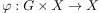
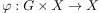
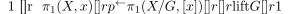
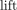
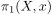
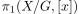

covering-like group action induces short exact sequence
1. Proposition
Let  be a topological group,
be a topological group,  a pathconnected topological space and  a covering-like topological group action.
Then there exists a short exact sequence
a pathconnected topological space and  a covering-like topological group action.
Then there exists a short exact sequence

where  is the lifting of paths as group homomorphism
2. Proof
2.1. exact at 
2.2. exact at 
is welldefined (cf. orbital projection of a free action as covering map and covering-like) and furthermore unique (cf. unique path lifting for a covering map)